Error; No Explanation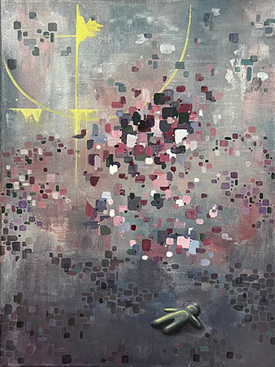@_NoonHind LightMidnight Blooms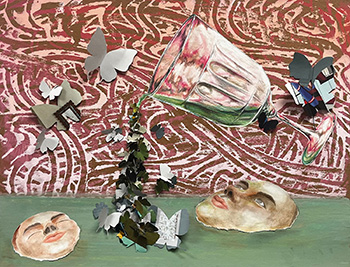Absinthe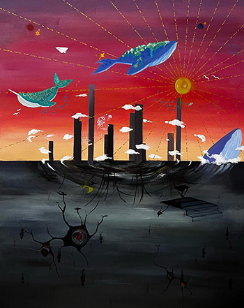Dreamscapeshim & INeuro_divergent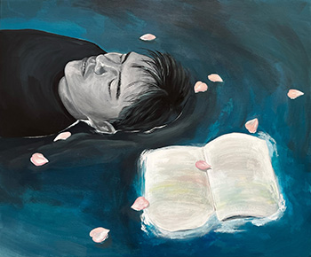Neuro_typical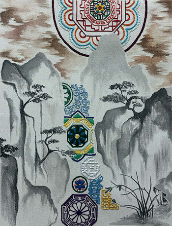SansuhwaUntil the last Flower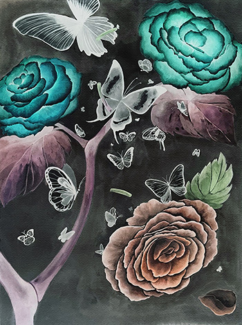Gardening_inverted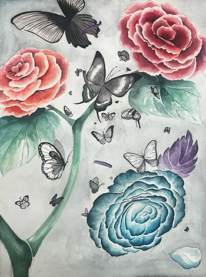Gardening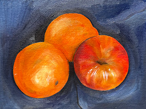Untitled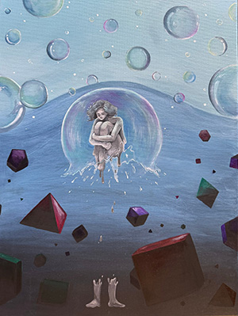ThroughKoi PondOnce I was a DreamerREM; insomnia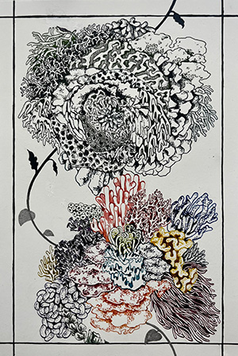SATURATIONSociety; IndividualOut of Threads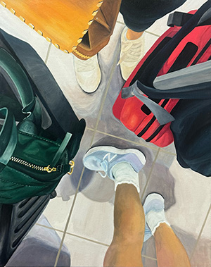RepartureON & OFF